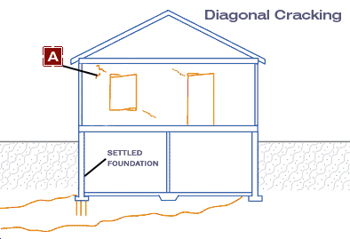
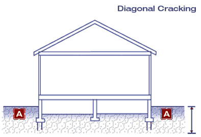

Symptoms and Solutions
Problem: Diagonal cracking of walls
Causes
Solutions
Settlement is usually caused by one of more of the following conditions:
- Long term consolidation of compressible clay under the foundation.
- Weaker, more compressible soil beneath a portion of the foundation. Frequently uncompacted fill.
- Increased pressure on a portion of the foundation possibly from the weight of a new addition.
- Periodic volume changes in some clay soils because of changes in their water content.
The preferred solution for settlement is to deepen, or underpin the settling foundation down to a depth below the zone causing the problem. The choice of underpinning system depends on the specific conditions of the property. Roll over the links below to view the typical underpinning applications on the right. Passive Pit Underpining Active Jacked Active or Passive Drilled Mini-Pile Active Helical Mini-Pile Note: "Active" underpinning can be loaded to relevel the home. "Passive" underpinning prevents further settlement but cannot relevel a home. Depending on conditions, costs typically run $400 - $500 per linear foot of foundation underpinning.